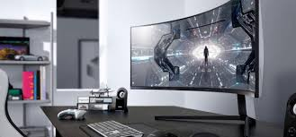

Acer

-
Called "the region's most impressive technology company" in a 1996 article in The Economist, Acer Inc.
-
is Taiwan's leading exporter and the world's seventh-largest personal computer brand.
The company also ranks among the world's ten biggest manufacturers of individual components like keyboards, monitors, and CD-ROM drives, and is America's ninth-largest personal computer producer.
-
Hsiang Chih Technology Corp. (99.7%); Yang Chih Technology Corp. (74.98%); Hsin Chi Technology Corp. (85.68%); Li Chi International Corp. (51.5%); Acer America Corp. (United States); Acer Sales & Distribution (Hong Kong; 85%); Acer Japan Corp. (Japan; 83.34%); Acer Latin America, Inc. (United States; 85%); Acer Computer Australia Pty. Ltd. (Australia; 85%); Acer Sales and Service Sdn Bhd (Malaysia; 85%); Acer Computer (South Asia) Pte. Ltd. (Singapore; 85%); Acer Computer (Far East) Ltd. (Hong Kong; 72.3%); Fora Worldwide Corp. (United States; 63%); Acer Computer France (France); Acer Computer B.V. (Holland); Acer U.K. Ltd.; Acer Italy S.R.L. (Italy); Acer Computer GmbH (Germany); Acer Scandinavia A/S (Denmark); Acer Computer Vienna (Austria); Acer Market Services Ltd. (Hong Kong; 67.36%); Multiventure Investment Inc. (99.98%); Chun Chi Investment Corp. (99.99%); Acer Worldwide Inc.; Acer European Holdings Acer Holding International Inc. (85%); Acer Computer International Pte. Ltd. (Singapore; 85%); Long Hsien International Co.,